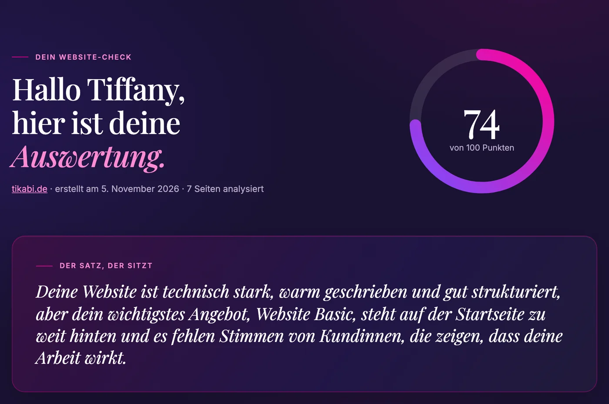
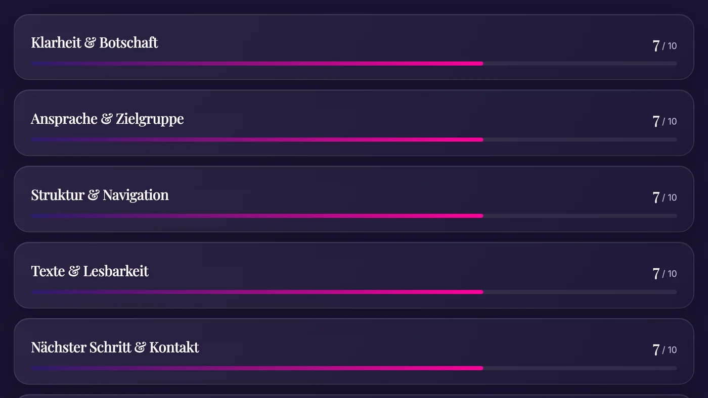
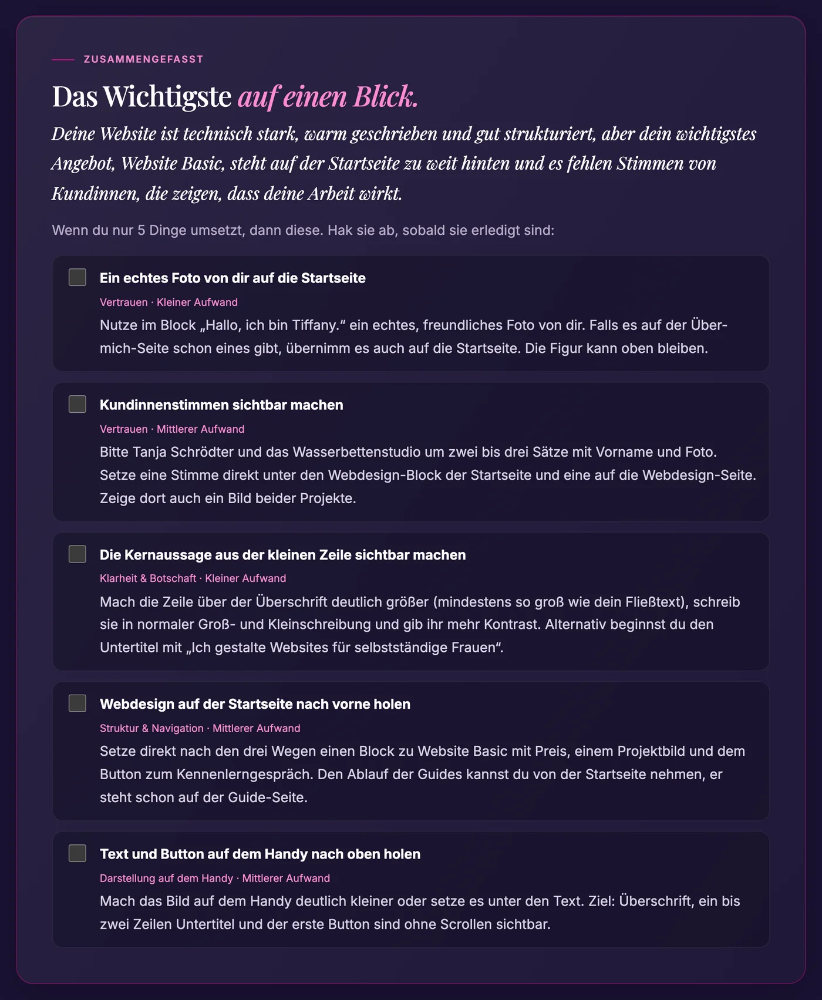

Website-Check für selbstständige Frauen
Deine Website bringt keine Anfragen? Finde in wenigen Minuten heraus, woran es liegt.
Der Website-Check schaut sich deine Website an wie eine fremde Besucherin. Du bekommst einen ausführlichen Bericht mit dem, was schon gut ist, und dem, was du konkret verbessern kannst.
Bericht in der Regel nach wenigen Minuten · Nachher-Check inklusive · voll anrechenbar auf Website Basic
Kennst du das?
Du hast dir so viel Mühe gegeben. Und trotzdem passiert nichts.
- Deine Website ist online, aber Anfragen kommen kaum oder gar nicht.
- Du hast das Gefühl, irgendwas stimmt nicht, weißt aber nicht, was.
- Du willst nicht gleich alles neu machen, sondern erst einmal verstehen, wo du ansetzen kannst.
Ein Blick in den Bericht
So sieht dein Website-Check aus.
Ein echtes Beispiel: der Bericht für meine eigene Website tikabi.de.



Was du bekommst
Alles, was du brauchst, um gezielt anzufangen.
- Analyse deiner Startseite und bis zu sieben weiterer Seiten
- Gesamtnote und Bewertung in zehn Bereichen, von Botschaft und Texten bis Technik
- Was schon gut ist und was du konkret verbessern kannst, sortiert nach Wichtigkeit
- Schnelle Verbesserungen und Textvorschläge für Überschriften und Buttons
- Ladezeit und Handy-Ansicht gemessen, dazu Tipps für Google und ChatGPT
- Zum Schluss die fünf wichtigsten Punkte als Checkliste zum Abhaken
- Inklusive Nachher-Check: Nach deinen Änderungen prüfst du deine Website ein zweites Mal und siehst, was sich verbessert hat
So läuft es ab
In drei Schritten zu deinem Bericht.
- Website-Check kaufen. Du bekommst sofort eine E-Mail mit deinem persönlichen Link.
- Website eintragen. Dazu ein paar Sätze, was du anbietest und für wen. Das dauert zwei Minuten, Zugangsdaten brauchst du nicht.
- Bericht lesen. In der Regel nach wenigen Minuten, online und als PDF.
Dein Website-Check
97 €
Und falls du die Umsetzung danach lieber abgeben möchtest: Mit deinem persönlichen Gutschein werden dir die 97 € voll auf Website Basic angerechnet.
Sichere Bezahlung über Payhip · Bericht in der Regel nach wenigen Minuten
Gut zu wissen
Vielleicht fragst du dich gerade …
Muss ich dafür technisch fit sein?
Nein. Du trägst nur die Adresse deiner Website ein und schreibst ein paar Sätze zu deinem Angebot. Zugangsdaten brauchst du nicht. Der Bericht ist verständlich geschrieben, ohne Fachchinesisch.
Funktioniert das mit jedem Baukasten?
Ja. Ob WordPress, Wix, Jimdo, Squarespace oder etwas anderes: Geprüft wird, was eine Besucherin auf deiner Website sieht.
Schaust du dir meine Website persönlich an?
Die Analyse läuft automatisch: Eine KI prüft deine Website nach den Kriterien, die ich als Webdesignerin festgelegt habe. Deshalb bekommst du deinen Bericht in wenigen Minuten. Wenn du danach Fragen hast, antworte einfach auf die Mail, dann melde ich mich innerhalb von 24 Stunden persönlich.
Was ist der Nachher-Check?
Wenn du Verbesserungen umgesetzt hast, startest du in deinem Bericht einmal kostenlos einen zweiten Check. Dann siehst du für jeden Bereich, was sich verändert hat.
Was ist, wenn ich die Umsetzung abgeben möchte?
Dann bekommst du mit dem Bericht einen persönlichen Gutschein. Damit werden dir die 97 € voll auf Website Basic angerechnet. Vorher können wir in einem kostenlosen Kennenlerngespräch klären, ob das zu dir passt.
Noch nicht so weit?
Starte mit dem kostenlosen Selbstcheck.
Zehn ehrliche Fragen zum Ankreuzen, in zehn Minuten. Danach weißt du, wo deine Website gerade steht.
Mit Anmeldung zum TIKABI Newsletter, jederzeit abmeldbar.